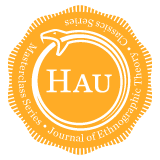

THE HAU-MORGAN LECTURES INITIATIVE
A HAU AND UNIVERSITY OF ROCHESTER COLLABORATION
2014
© 2014 by Emily Martin
This work is licensed under the Creative Commons
Attribution-NonCommercial-NoDerivs 3.0 Unported.
| The HAU-Morgan Lectures Intiative Editorial Team |
|
|---|---|
| Editor-in-Chief | Giovanni da Col |
| Managing Editor | Sean M. Dowdy |
| Infrastructure Editor | Timothy Elfenbein |
| Associate Editor | Julie Billaud |
| Editor-At-Large | David Graeber |
| Editorial Assistants | Justin Dyer Zachary Sheldon |
| Editorial Intern | Brian Wilson |
|
Contact
|
|
| giovannidacol@haujournal.org | |
| Website | http://www.haujournal.org |
| http://on.fb.me/haujournal | |
| @haujournal | |

SUPPORTED BY
HAU-N.E.T.
NETWORK OF ETHNOGRAPHIC THEORY
Aarhus University – EPICENTER (DK)
University of Amsterdam (NL)
University of Bergen (NO)
University of Canterbury (NZ)
Centre d’Études Himalayennes, CNRS (FR)
University of Chicago (US)
Cornell University (US)
University of Edinburgh (UK)
University of Helsinki (FI)
Johns Hopkins University (US)
University of Kent (UK)
Institute of Social Sciences of the University of Lisbon (PT)
Manchester University and JRLUM Library (UK)
Norwegian Museum of Cultural History (NO)
University of Oslo (NO)
Pontificia Universidad Católica (CL)
Princeton University (US)
University of Rochester (US)
Universidad Autónoma de San Luis Potosi (MX)
University of Sydney (AU)
AND
Pitt-Rivers Video Project, Cambridge, UK
Sutasoma Trust, UK
International Social Research Foundation (ISRF), UK
Kultur Studier, NO
Foreword by Eleana Kim
Lecture I: Money and value in China
Lecture II: Spirits and currency in China
Lecture III: Money and value in the United States
Lecture IV: Spirit and prosperity in the United States
References
Figure 1: Blaxton, The English usurer. Title page illustration.
Figure 2: The movements of money.
Figure 3: Chinese coins. Photo by the author.
Figure 4: Market in the early Han dynasty (206 BCE–AD 220).
Figure 5: Paper money from the Ming dynasty (1368–1644).
Figure 6: Nineteenth-century vendors and craftsmen from Kiangsi province.
Figure 7: Nineteenth-century Hong Kong physician selling his wares.
Figure 8: Itinerant pepper grinder in Shanghai in the 1980s. Photo by the author.
Figure 9: Nineteenth-century scholars.
Figure 10: Sieving rice in Taiwan. Photo by the author.
Figure 11: Nineteenth-century shoemaker and blacksmith.
Figure 12: Nineteenth-century tea dealers.
Figure 13: Nineteenth-century individual cells for the governmental examinations.
Figure 14: Merchants wearing furs and silk.
Figure 15: Aerial view of terraced rice fields.
Figure 16: Nineteenth-century silk reelers.
Figure 17: Nineteenth-century embroiderers.
Figure 18: The five grains in a rice measure in Taiwan. Photo by the author.
Figure 19: The eldest son holding the rice measure in Taiwan. Photo by the author.
Figure 20: Kitchen god behind the stove in Fukien province. Photo by the author.
Figure 21: Close-up of image of kitchen god in Fukien province. Photo by the author.
Figure 22: New Year’s house cleaning in Taiwan. Photo by the author.
Figure 23: Rice harvesting in Taiwan. Photo by the author.
Figure 24: Gifts being brought to the bride in Taiwan. Photo by the author.
Figure 25: Gifts to the bride in Taiwan. Photo by the author.
Figure 26: A bride with gifts arranged behind her in Taiwan. Photo by the author.
Figure 27: Village earth god temple in Taiwan. Photo by the author.
Figure 28: Large temple in Taiwan. Photo by the author.
Figure 29: Ancestral hall in Taiwan. Photo by the author.
Figure 30: Collecting the ancestral bones in an urn in Taiwan. Photo by the author.
Figure 31: Cleaning the ancestral bones in Taiwan. Photo by the author.
Figure 32: Decorated “Honorable Pigs” in Taiwan. Photo by the author.
Figure 33: Display of “Honorable Pigs” in Taiwan. Photo by the author.
Figure 34: Paper spirit house from twentieth-century Hong Kong.
I would like to thank the faculty of the Department of Anthropology at the University of Rochester, who invited me to give these lectures in 1986. I am especially grateful to Anthony Carter, who was warmly encouraging and consistently helpful before, during, and after my visit. In 2014 Eleana Kim continued this tradition of care and attention, and I thank her. I am grateful to the editorial staff of HAU for making the preparation of the manuscript orderly and efficient. Justin Dyer’s conscientious and skillful editing was essential, and Sean Dowdy’s organized management made the process flow smoothly. I thank my family—Richard, Jenny, and Ariel—for their patience during the preparation of these lectures in 1986 and in again in 2014.